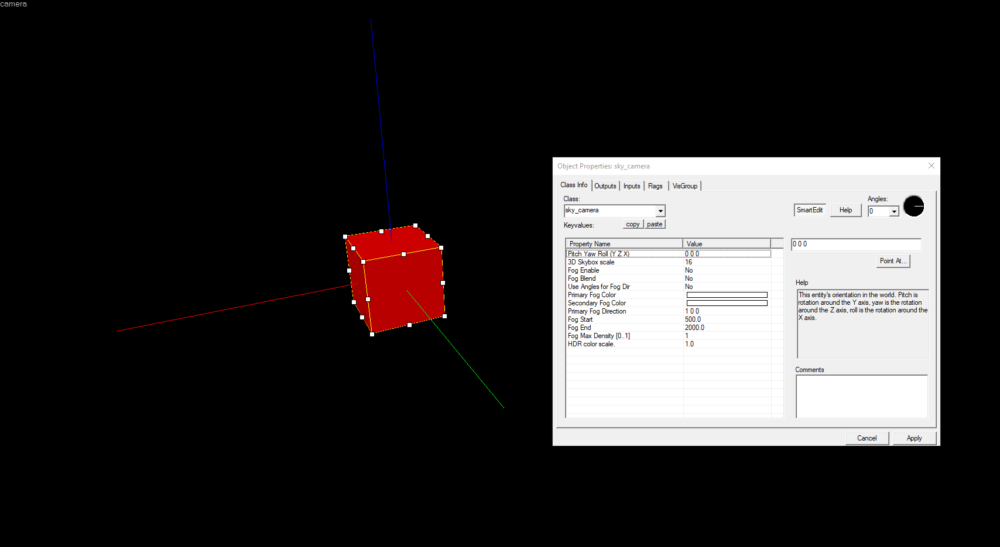

3D Skybox
Agregar un skybox 3D puede ser una poderosa adición al tratamiento visual de un nivel. El skybox 3D es un área adicional construida por el diseñador de niveles que está fuera de los límites de la parte de juego del mapa. Cuando se carga el mapa, Source agranda los objetos en el área del skybox 3D y los coloca fuera de los límites del nivel actual, entre el skybox y el jugador. Esto se usa para dar la apariencia de un mundo mucho más amplio fuera de su nivel, sin ser demasiado caro para el presupuesto debido a la escala 1:16 (predeterminada). Los skyboxes 3D no son interactivos: el jugador y otras entidades no pueden moverse al espacio del skybox 3D.
La geometría del skybox 3D puede ser indistinguible de la geometría de nivel normal. Las transiciones fluidas desde la geometría de nivel normal y el skybox 3D son muy posibles, y se utilizan en muchos de los mapas para juegos oficiales de Source, como Counter-Strike: Source.
Los Skyboxes 3D tienen las siguientes características:
- Se construyen (por defecto) en escala 1/16 en el editor de Hammer y luego se renderizan a 16 veces el tamaño en el motor para que coincida con la geometría del mundo.
- Materiales de soporte con efectos de sombreado como mapeo normal, agua, mapeo del entorno, proxies, etc. No son interactivos: los jugadores y otras entidades del mundo no pueden ingresar a los palcos en 3D. El skybox 3D es solo una extensión visual de la extensión del mapa.
- Puede construirse con pinceles, desplazamientos, accesorios estáticos y dinámicos, luces, entidades de pincel y entidades puntuales (como env_sprite ).
- Cualquier modelo que se coloque en el skybox 3D debe ser creado a escala 1/16. Los modelos estándar ( accesorios ) no se escalan correctamente para el skybox 3D. Deben utilizarse versiones especiales a escala 1/16. Para Half-Life 2 , estos accesorios se pueden encontrar en el models/props_skyboxdirectorio.
- No debe contener info_player_start , NPC o monstruos.
- Tienen un mapa de luz y una resolución de textura más bajos debido a la escala a la que se crean.
- Debe tener sus propias fuentes de iluminación, aunque también se utilizará un entorno de luz en la sección que no es del skybox para la iluminación del skybox en 3D.
- Utilice la entidad sky_camera para controlar cómo se alinean con la geometría del mundo que no es skybox.
- Los skyboxes 3D tienen sus propios parámetros de niebla, ajustables en la entidad sky_camera .
- La geometría en el skybox 3D no se ocluye ni se elimina como el resto de la geometría del nivel. Agregar muchos modelos o geometría de pincel detallados al skybox 3D, especialmente con materiales translúcidos, puede afectar gravemente al rendimiento.
- Un mapa debe tener un light_environment, de lo contrario, los modelos en el skybox 3D se iluminarán incorrectamente. Un light_environmenten la parte del mapa que no es skybox niega la necesidad de uno en el skybox 3D.